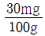
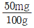
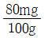
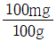
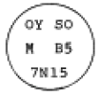

수산제조기사 (2005-05-29 기출문제)
1과목: 식품위생학
1. 다음의 인축공통전염병과 병원체의 연결이 잘못된 것은?
- Q 열 - Coxiella burnetii
- 파상열 - Brucella abortus
- 탄저 - Bacillus cereus
- 야토병 - Pasteurella tularensis
(정답률: 알수없음)

2. 식품첨가물에 대한 다음의 설명 중 올바른 것은?
- 식품첨가물의 안전성 검토에는 1일섭취허용량을 결정하고 독성시험은 급성, 아급성, 만성독성 시험의 3단계로 분류한다.
- 쨈류에 식품첨가물인 보존료를 첨가한 경우 다른 가열공정을 하지 않고 안전하게 유통시킬 수 있다.
- 식품제조가공시에 사용한 원료에 보존료를 첨가하지 않은 경우 "무보존료" 라고 표시할 수 있다.
- 식품제조가공업소로 신고한 영업소는 식품 뿐만 아니라 식품첨가물도 생산할 수 있다.
(정답률: 알수없음)
3. 육류 발색제로 쓰이는 첨가물은?
- CuSO4
- FeSO4
- KNO2
- Fe2O3
(정답률: 알수없음)
4. 체내에 축적되어 만성중독을 일으킬 가능성이 가장 높은 농약류는?
- 유기인제
- 다이옥신
- 비소제
- 유기염소제
(정답률: 알수없음)
5. 돼지를 중간숙주로 하며 인체유구낭충증을 유발하는 기생충은?
- 간디스토마
- 긴촌충
- 민촌충
- 갈고리촌충
(정답률: 알수없음)
6. 수인성 전염병에 속하지 않는 것은?
- 장티푸스
- 이질
- 콜레라
- 파상풍
(정답률: 알수없음)
7. 단백질 식품의 변질상태를 조사하고자 한다. 다음 중 단백질 식품의 부패생성물과 거리가 먼 것은?
- 암모니아
- 알콜
- 황화수소(H2S)
- 아민류
(정답률: 알수없음)
8. 다음 소독 및 살균의 관계를 나타낸 것 중 틀린 것은?
- 식품공장에 있어서 기구 및 기계의 살균 – 증기살균
- 음식용 식기의 소독 - 자비소독(끓임소독)
- 우물물의 소독 - 불소의 첨가
- 우유의 살균 – 62~65℃의 온도에서 30분간 가열살균
(정답률: 알수없음)
9. 탄산을 포함하지 않는 청량 음료수에 사용하려고 할 때 가장 적합한 보존료는?
- Sodium benzoate
- Sodium propionate
- Potassium sorbate
- Dehydroacetic acid
(정답률: 알수없음)
10. 식품을 저온 보존할 경우 어패류의 신선도 유지기간이 짧은 이유로 올바른 것은?
- 호기성 세균이 다수 부착되어 있을 수 있기 때문
- 호냉세균이 다수 부착되어 있을 수 있기 때문
- 호염세균이 다수 부착되어 있을 수 있기 때문
- 혐기성 세균이 다수 부착되어 있을 수 있기 때문
(정답률: 알수없음)
11. 식품에 대한 저선량 방사선조사(1kGy 이하)의 목적이 아닌 것은?
- 발아억제
- 바이러스 사멸
- 기생충의 사멸
- 숙도의 지연
(정답률: 알수없음)
12. 식품공장에서 소화기계 전염병체 및 기생충란 오염을 방지하기 위해 처리에 신중을 기해야 하는 것은?
- 하수
- 분뇨
- 작업장
- 배수구
(정답률: 알수없음)
13. 식중독 세균인 장염 비브리오균의 특징에 해당되는 것은?
- 아포를 형성한다.
- 내열성이 있다.
- 감염형 식중독균으로 전형적인 급성장염을 유발한다.
- 편모가 없다.
(정답률: 알수없음)
14. 식품 검체로부터 미생물을 신속하게 검출하는 방법에 해당하는 것은?
- PCR을 이용하는 방법
- TLC를 이용하는 방법
- HPLC를 이용하는 방법
- IR을 이용하는 방법
(정답률: 알수없음)
15. 식품에 사용되는 기구 및 용기·포장의 일반 기준에 해당하지 않는 것은?
- 식품에 사용되는 기구 및 용기·포장의 제조시에 디옥틸프탈레이트를 사용해서는 안 된다.
- 식품에 사용되는 용기·포장의 제조시 인쇄가 필요한 경우 식품과 접촉하는 면에는 인쇄하면 안 된다.
- 전류를 직접 식품에 통하게 하는 장치를 가진 기구의 전극은 백금과 알루미늄 이외의 금속을 사용해서는 안 된다.
- 식품에 사용되는 용기·포장의 재질은 별도로 식품위생법에 제시되어 있다.
(정답률: 알수없음)
16. 공장폐수에 의한 식품오염에 대한 설명으로 적합한 것은?
- 도금공장의 폐수는 주로 유기성 폐수로서 유해물질이 농·수산물 등에 직접적인 피해를 주는 경우가 있다.
- 식품공장의 폐수는 주로 무기성 폐수로서 생물학적 산소요구량(BOD)이 높고 부유물질을 다량 함유하고 있어 용수를 오염시켜 2차적인 피해를 주는 경우가 있다.
- 생물학적 산소요구량(BOD)이란 물 속에 있는 오염물질이 생물학적으로 산화되어 유기성 산화물과 가스가 되기 위해 소비되는 산소량을 ppm으로 표시한 것이다.
- 미나마타(Minamata)병은 공장폐수 중 메틸수은 화합물에 오염된 어패류를 장기간 섭취한 결과이다.
(정답률: 알수없음)
17. 안전한 식품 제조를 위한 작업장 관리에 대한 설명으로 적절치 않은 것은?
- 내장재는 사전에 불침수성을 조사하여 선정한다.
- 청정도가 낮은 지역을 가장 큰 양압으로 하여 청정도가 높아질수록 실압으로 낮추어 간다.
- 먼지가 누적되는 곳을 줄이기 위하여 코너에 45도 경사를 둔다.
- 작업상 필요한 조도를 충분히 갖도록 하여 감시 및 검사지역은 600lux로 한다.
(정답률: 알수없음)
18. 사과쥬스에 신규로 기준규격이 설정된 곰팡이 독소로 오염된 맥아뿌리를 사료로 먹은 젖소가 집단식중독을 일으킨 곰팡이 독소는?
- Patulin
- Afaltoxin
- Ochratoxin
- Zearalenone
(정답률: 알수없음)
19. 주로 감자 중의 발아부위에 함유되는 독성물질은?
- 무스카린(muscarine)
- 아마니타톡신(amanitatoxin)
- 베네루핀(venerupin)
- 솔라닌(solanine)
(정답률: 알수없음)
20. 질병 발생의 역학적 인자에 해당되지 않는 것은?
- 문화적 인자
- 환경적 인자
- 숙주적 인자
- 병인적 인자
(정답률: 알수없음)
2과목: 수산화학
21. 다음 중 통조림의 스트루바이트(struvite) 생성 억제를 위한 가장 효과적인 것은?
- pH를 약 알칼리성으로 유지
- 살균 후 급냉
- Tyrosinase의 첨가
- 탄산칼슘의 첨가
(정답률: 알수없음)
22. 수산물의 유독성분 중 신경독이 아닌 것은?
- Holotoxin
- Tetrodotoxin
- Saxitoxin
- Gonyautoxin
(정답률: 알수없음)
23. 식품의 구성성분과 결합된 결합수(bound water)와 관계가 먼 것은?
- 용매로서 작용하지 않는다.
- 미생물의 번식이나 발아에도 이용될 수 없는 수분이다.
- 어육에는 대개 15∼25% 함유되고 있다.
- 0℃가 되어야 한다.
(정답률: 알수없음)
24. 김(해태)에서 가장 함량이 많은 유리 아미노산은？
- 타우린(taurine)
- 알라린(alanine)
- 글루탐산(glutamic acid)
- 프롤린(proline)
(정답률: 알수없음)
25. 식품의 부패생성물 중 유독한 염기성 질소화합물을 전체적으로 무엇이라고 하는가?
- histidine
- ptomaine
- choline
- muscarine
(정답률: 알수없음)
26. 다음 중 중성 지질(비극성 지질)이 아닌 것은？
- 탄화수소
- 인지질(phospholipid)
- 스테롤(sterol)
- 왁스에스테르(wax ester)
(정답률: 알수없음)
27. 넙치류의 관능적 선도 판정에 있어서 주의해야 할 점은?
- 흰 쪽 검은 쪽이 선도가 매우 달라진다는 점이다.
- 검은 쪽면을 관찰해야 한다는 점이다.
- 비늘이 없으므로 손으로 눌러보는 것은 무의미하다는 점이다.
- 생길 때 부터 표면에 점질물이 있다는 점이다.
(정답률: 알수없음)
28. 염장한 어육의 식염 삼투량(渗透量)을 높이는 방법으로서 적당하지 않는 것은?
- 식염 사용량을 증가시킨다.
- 염장 온도를 높인다.
- 선도가 떨어진 생선을 원료로 사용한다.
- 순도가 높은 식염을 사용한다.
(정답률: 알수없음)
29. 대부분의 연체류 근육에 생성되지 않는 물질은?
- ATP(adenosine triphosphate)
- TMA(trimethylamine)
- IMP(inosine monophosphate)
- Adenosine
(정답률: 알수없음)
30. 어육이 보수력(保水力)을 갖는 주 원인이 되는 것은?
- 수용성 단백질
- 경 단백질
- 글리코겐
- 근원섬유 단백질
(정답률: 알수없음)
31. 부패과정 중 단백질을 구성하는 아미노산에서 탈아미노 반응 형식과 관계가 먼 것은？
- 산화적 탈아미노반응
- 환원적 탈아미노반응
- 직접적 탈아미노반응
- 간접적 탈아미노반응
(정답률: 알수없음)
32. 다음 중 갈조류의 전분에 상당하는 성분은？
- 라미나란(laminaran)
- 후코이단(fucoidan)
- 알긴산(alginic acid)
- 사르가산(sargassan)
(정답률: 알수없음)
33. 어종의 감별에 주로 이용되는 단백질은？
- 골격 단백질
- 미량 조절 단백질
- 조절 단백질
- 수축 단백질
(정답률: 알수없음)
34. 다음 중 해당(glycolysis)과정의 최종 생성물은？
- 피루빈산(pyruvic acid)
- 구연산(citric acid)
- 하이포크산틴(hypoxanthine)
- 아세트산(acetic acid)
(정답률: 알수없음)
35. 상어·홍어의 휘발성 염기질소 초기부패 기준은？




(정답률: 알수없음)
36. 요오드가(Iodine value)는 다음 설명 중 어느 것인가?
- 기름 1㎏에 흡수되는 요오드의 g수
- 기름 1g에 흡수되는 요오드의 ㎎수
- 기름 100g에 흡수되는 요오드의 g수
- 기름 10g에 흡수되는 요오드의 ㎎수
(정답률: 알수없음)
37. 다음 중 혈합육 보다 보통육에 더 많은 성분은？
- 단백질
- 지질
- 회분
- 유황
(정답률: 알수없음)
38. 다음 중 백색육 어류에 속하는 것은?
- 정어리
- 방어
- 돔
- 가다랑어
(정답률: 알수없음)
39. 다랑어 육을 가열하면 담녹색 또는 회녹색으로 변하는데 이 변화와 관계 없는 성분은?
- TMAO
- 시스테인
- met-myoglobin
- 젓산
(정답률: 알수없음)
40. 혈청 지질의 개선작용이 강한 물질은？
- EPA(eicosapentaenoic acid)
- 팔리톡신(palytoxin)
- 돌라스타틴(dolastatin)
- 아프리시스타틴(aplysistatin)
(정답률: 알수없음)
3과목: 수산가공학
41. 연제품 제조시 탄력형성에서 관계가 먼 것은?
- 밀가루
- 설탕
- 소금
- 달걀흰자
(정답률: 알수없음)
42. 패류에 있어서 전중량에 대한 육중량의 대략적인 비율은 몇 %인가?
- 10 ~ 30
- 20 ~ 40
- 30 ~ 50
- 40 ~ 60
(정답률: 알수없음)
43. 어패류를 그대로 또는 염장한 것을 삶은 후 말린 건제품을 무엇이라 하는가?
- 간 마른치(염건품)
- 찐 마른치(자건품)
- 얼 마른치(동건품)
- 날 마른치(소건품)
(정답률: 알수없음)
44. 식품포장 용기로서 유리병의 장점이 아닌 것은?
- 투명하며 내용물을 볼 수 있다.
- 기체투과성 및 투습성이 없다.
- 포장 및 수송경비가 적게 든다.
- 화학적으로 안정하다.
(정답률: 알수없음)
45. 어유의 정제에 관한 사항 중 틀린 것은?
- 알칼리 정제시는 가급적 저온에서 처리한다.
- 어유의 탈취법중 수소 첨가법과 중합법이 효과가 좋다.
- 간유 정제시는 활성탄 등을 사용하는 흡착법이 효과적이다.
- 황산 정제법은 무색의 유지 등을 정제할 때 사용한다.
(정답률: 알수없음)
46. 어체내의 식염의 균일한 삼투는 어려우나 특별한 설비가 없어도 대량 어획물의 염장처리에 적당한 방법은?
- 물간법
- 마른간법
- 가염지와 본염지
- 압착 염장법
(정답률: 알수없음)
47. 훈연법 중 수분함량이 50~65%로 보존성은 적으나 제품에 풍미를 붙이는 것을 주 목적으로 한 훈연법은?
- 냉훈법
- 온훈법
- 전훈법
- 액훈법
(정답률: 알수없음)
48. 마른김이 흡습하면 chlorophyll 색소가 분해되고 흑자색이었던 색택이 적갈색으로 변한다. 무슨 색소가 잔존하기 때문인가?
- carotenoid
- phytin
- cytochrome
- phycobilin
(정답률: 알수없음)
49. 동결건조(freeze drying)의 원리를 가장 잘 표현한 것은?
- 진공을 이용한 건조
- 농축을 이용한 건조
- 승화를 이용한 건조
- 감압증발을 이용한 건조
(정답률: 알수없음)
50. 훈제품의 가공시에 훈연성분의 조성에 가장 큰 영향을 미치는 것은?
- 가열속도
- 가열시간
- 훈재의 종류
- 산소공급량과 속도
(정답률: 알수없음)
51. 어육소시지의 가공공정 중 주름펴기를 위하여 약 95℃의 열탕에 침지한다. 가장 적당한 침지처리시간은?
- 30초 정도
- 1분 30초 정도
- 2분 30초 정도
- 3분 30초 정도
(정답률: 알수없음)
52. 개별동결 식품(IQF)을 가공하는데 가장 빠른 동결법은?
- 송풍 동결법
- 액화가스 동결법
- 부분 동결법
- 저온 삼투압 탈수 동결법
(정답률: 알수없음)
53. 식품포장을 하는 목적을 설명한 것 중 가장 중요한 것은?
- 내용물의 보존성을 높인다.
- 상품가치를 높인다.
- 위해 요소의 오염을 막는다.
- 보호성을 부여한다.
(정답률: 알수없음)
54. 식품포장재료로서 갖추어야 할 조건이 아닌 것은?
- 위생성과 보호성
- 영양성과 저장성
- 작업성과 편리성
- 상품성과 경제성
(정답률: 알수없음)
55. 변성이 가장 민감하게 일어나는 어육단백질은?
- 근형질 단백질
- 근원섬유 단백질
- 근기질 단백질
- 결체조직 단백질
(정답률: 알수없음)
56. 염장품 제조시 첨가하는 식염의 보장효과와 거리가 먼 것은?
- 산소의 용해도 감소로 호기성 세균의 발육억제
- 세균에 대한 염소이온의 저해작용
- 식염자체의 살균력
- 단백질 분해 효소작용의 저해
(정답률: 알수없음)
57. 고기풀의 엉겨앉음(setting)현상이란 무엇인가?
- 고기풀이 가열응고하여 탄력이 거의 없는 두부 모양으로 되는 현상
- 고기풀을 상온에 그대로 두었을 때 탄력있는 gel로 변하는 현상
- 펩티드 코일처럼 꼬이는 현상
- 고기풀을 낮은 온도에서 장시간 가열하면 일어나는 현상
(정답률: 알수없음)
58. 멸치 자숙시 삶는 물의 소금농도는 얼마가 적당한가?
- 5 ~ 10%
- 7 ~ 12%
- 3 ~ 5%
- 10 ~ 15%
(정답률: 알수없음)
59. 젓갈류 중 김치를 담글 때 부원료로 많이 쓰이는 것은?
- 멸치젓, 새우젓, 굴젓
- 정어리젓, 대구알젓, 해삼창자젓
- 꼴뚜기젓, 전어밤젓, 메가리젓
- 전복내장젓, 성게알젓, 조개젓
(정답률: 알수없음)
60. 어체의 대소, 부위 및 생산시기에 따른 성분 조성의 변동에 대한 기술 중 옳지 않는 것은?
- 참치 복부육은 지방 함량이 높고 미오글로빈 함량이 낮다.
- 단백질의 함량은 어기에 따라 큰 차이가 없다.
- 산란 직전에는 지질 함량은 높고 엑스분도 농축되어 있다.
- 어체가 클수록 지방 함량이 적고 맛이 담백하다.
(정답률: 알수없음)
4과목: 통조림제조학
61. 다음 중 립(lip)이란?
- 2중밀봉부가 파도모양으로 된것
- 시임부부이 발같이 나온것
- 랩시임부를 뛰어넘은 현상
- 보디훅이 시임부 아래로 입술처럼 노출된 상태
(정답률: 알수없음)
62. 그림의 관 마크에서 원료의 품종명을 나타내는 것은?

- OY
- OY SO
- M B5
- 7N15
(정답률: 알수없음)
63. 다음 중 set up 관리시에 원통형관의 밀봉 훅(hook) 중합율은?
- 50% 이상
- 50% 이하
- 55% 이상
- 55% 이하
(정답률: 알수없음)
64. 통조림 제조에 있어서 올바른 공정은?
- 밀봉 - 가열살균 - 배기 - 냉각
- 가열살균 - 밀봉 - 배기 - 냉각
- 배기 - 밀봉 - 가열살균 - 냉각
- 배기 - 밀봉 - 냉각 - 가열살균
(정답률: 알수없음)
65. 다음 관 마크(can mark)에 사용되는 조리방법 중 옳지 않은 것은?
- BL - 보일드 통조림
- MD - 가미 통조림
- OL - 기름 담금 통조림
- SO - 훈제 기름 담금 통조림
(정답률: 알수없음)
66. 기계적 탈기법으로 제조한 통조림의 진공도에 영향을 주는 요인 중 틀린 것은?
- 밀봉온도가 높을 수록 진공도가 높다.
- 살균온도가 높을 수록 진공도가 높다.
- 내용물을 과도하게 살쟁임할 수록 진공도가 낮다.
- headspace가 적을 수록 진공도가 높다.
(정답률: 알수없음)
67. 레토르트내 공기에 의한 살균부족관이 생기는 이유와 관계가 먼 것은?
- 공기는 증기와 비교할때 가열 매체로서 효과가 극히 적다.
- 전도가열을 방해하는 절연체가 된다.
- 공기는 증기의 하부에 층을 형성하여 열분포가 고르지 못하게 한다.
- 공기는 증기의 상층에 있어 뜨거운 공기를 분산시킨다.
(정답률: 알수없음)
68. 다음 중 흑변의 발생이 가장 용이한 통조림은?
- 복숭아 통조림
- 파인애플 통조림
- 포도 통조림
- 게 통조림
(정답률: 알수없음)
69. 탈기의 목적과 관계가 없는 것은?
- 비타민의 파괴 및 영양소의 변질방지
- 혐기성 세균의 발육 저해
- 가열살균 중 관내공기의 팽창에 따른 관의 파손 방지
- 내용물의 변패 판별용이
(정답률: 알수없음)
70. 다음의 살균방법 중 열전탈 형태가 전도이어서 고체를 주로 하는 어육 및 축육 통조림의 살균에 가장 적당한 것은?
- 개방식 가열 살균
- 정치식 가열 살균
- 동요식 가열 살균
- 성층 가열 살균
(정답률: 알수없음)
71. 가다랑어나 다랑어류와 같은 대형어의 통조림에서 육의 표면에 다수의 작은 구멍이 생기는 것은?
- curd
- adhesion
- flat-sour
- honey comb
(정답률: 알수없음)
72. 통조림공장의 품질관리 기록 중 가장 장기보관이 필요한 것은?
- 원료의 불량률 관리기록
- 살균작업 관리기록
- 이중권체부위 검사기록
- 고형량 관리기록
(정답률: 알수없음)
73. 타발압연관(DI)의 재료로 가장 적당한 것은?
- 철
- 주석
- 알루미늄
- 아연
(정답률: 알수없음)
74. 통조림 밀봉시 다음 사항 중 직접 밀봉역할을 하지 않는 것은?
- Lifter
- 제2 roll groove
- 제1 roll groove
- Chuck flange
(정답률: 알수없음)
75. 어류 통조림식품의 황화수소(H2S) 발생과 관계가 없는 것은?
- cystine
- cystein
- lysine
- methionine
(정답률: 알수없음)
76. 살균통조림의 팽창원인이 아닌 것은?
- 내부 성분간 화학반응으로 가스발생
- 살균부족
- 밀봉불량
- 담기가 지나친 경우
(정답률: 알수없음)
77. 관 뚜껑의 요철부 즉 익스팬션 링(expansion ring)의 목적은?
- 관의 입체감을 주기 위해
- 관의 가열팽창에 의한 파손 방지
- 앞면 뒷면 구별하기 위해
- 오목부에 미생물을 모아 살균하기 쉽게
(정답률: 알수없음)
78. 레토르트내의 수증기가 일부 공기와 혼합된 상태로 있을 때 압력게이지에 나타난 압력은?
- 포화수증기압
- 수증기의 분압
- 공기의 분압
- 수증기 분압과 공기분압의 합
(정답률: 알수없음)
79. 통조림 살균에 있어서 상업적 살균조작이란?
- 관내의 부패 세균만을 완전히 죽이는 것
- 포자 형성 세균만을 완전히 살멸 시키는 것
- 관내세균을 살균하되 살균후 통조림 저장과 상관없는 세균은 살멸하지 않는것
- 포자 형성 세균과 생활세포를 완전히 살멸시키는 것
(정답률: 알수없음)
80. TFS관(tin free steel can)의 장점을 설명한 것으로 옳지 못한 것은?
- 도막의 접착이 극히 좋고 고온단시간소부가 가능하다.
- 납땜이 잘 된다.
- 황화변색을 잘 일으키지 않는다.
- 주석을 사용하지 않으므로 값이 싸다.
(정답률: 알수없음)
5과목: 냉동냉장학
81. 팽창밸브의 설치위치는?
- 응축기와 수액기 사이
- 압축기와 응축기 사이
- 응축기와 증발기 사이
- 증발기와 압축기 사이
(정답률: 알수없음)
82. In Line Freezer의 특징이 아닌 것은?
- 위생적이고 세균의 2차 오염방지
- 급속동결에 의한 동결시간의 단축과 품질좋은 제품 생산
- 제조공정을 연속화 할 수 있다.
- 개별동결 불가능
(정답률: 알수없음)
83. 이론적인 냉동사이클의 압축과정에서 엔탈피는 증가하는데 이때 엔트로피는 어떻게 되는가?
- 엔탈피에 비례하여 증가한다.
- 엔탈피에 반비례하여 감소한다.
- 엔탈피에 따라 증가 또는 감소한다.
- 엔탈피의 증가에 관계없이 일정하다.
(정답률: 알수없음)
84. 냉동기 운전 중 갑자기 정전이 되었다. 다음 조치사항 중 틀린 것은?
- 냉동기의 주 전원 스위치는 계속 통전시킨다.
- 수액기 출구정지 밸브를 닫는다.
- 흡입정지 밸브를 닫고 전동기가 정지하면 토출정지 밸브를 닫는다.
- 냉각수용 전동기의 스위치는 전원을 차단한다.
(정답률: 알수없음)
85. 냉동에서 가장 많이 이용되는 열은?
- 증발열
- 승화열
- 융해열
- 잠열
(정답률: 알수없음)
86. 식품표면의 온도가 0℃로 떨어진 때 부터 식품의 중심온도가 -15℃까지 낮아질 때 까지 걸리는 시간을 무엇이라고 하는가?
- 유효동결시간
- 급속동결시간
- 공칭동결시간
- 심온동결시간
(정답률: 알수없음)
87. 응축기 중 전열이 가장 불량한 것은?
- 공냉식 응축기(air cooled condenser)
- 증발식 응축기(evaporative condenser)
- 2중관 응축기(double tube condenser)
- 쉘튜브 응축기(shell and tube condenser)
(정답률: 알수없음)
88. 저온세균이 저온에서 증식이 가능한 이유가 아닌 것은?
- 세포막이 저온에서 유동성을 유지함
- 세포막이 저온에서 기질 투과성의 기능을 보존함
- 단백질 합성능력이 저온에서도 유지됨
- 세포막에 포화지방산을 많이 함유함
(정답률: 알수없음)
89. 다음 중 선박용 동결장치로 가장 적당한 것은?
- 공기 동결장치(sharp freezing)
- 송풍 동결장치(air blast freezing)
- 접촉식 동결장치(contact freezing)
- 침지식 동결장치(immersion freezing)
(정답률: 알수없음)
90. 물에 젖은 냉각관에 냉각공기를 송풍시켜 물의 증발에 의한 냉각작용과 냉각수에 의한 냉각작용을 조합(組合)한 응축기는 어느 것인가?
- 쉘앤드 튜브 응축기
- 쉘앤드 코일 응축기
- 증발식 응축기
- 공냉식 응축기
(정답률: 알수없음)
91. 다음 설명 중 옳은 것은?
- 압축비는 고압 압력계가 나타내는 압력을 저압 압력계가 나타내는 압력으로 나눈것이다.
- 팽창밸브를 통과하는 냉매의 enthalpy는 감소한다.
- 습포화증기에 열을 가하면 포화온도에서 액화한다.
- 고압상태의 포화액을 팽창밸브를 통과시켜 급격히 압력을 내리면 습포화증기로 된다.
(정답률: 알수없음)
92. Brine에 대한 다음 설명 중 가장 타당한 것은?
- 직접 냉매
- 간접 냉매
- 암모니아가 여기에 속한다.
- 냉매라 볼 수 없다.
(정답률: 알수없음)
93. 냉동능력이 5RT이고 압축기 소요동력이 6KW일 때 이 냉동장치의 응축기에서 방출해야 할 열량(kcal/h)은?
- 18,912
- 20,280
- 20,392
- 21,760
(정답률: 알수없음)
94. 어떤 냉동기의 운전조건이 응축온도 30℃, 과냉각도 5℃, 증발온도 -20℃일 때 이 장치의 이상적 냉동기의 성적계수는?
- 4.35
- 5.06
- 6.87
- 15
(정답률: 알수없음)
95. 냉동장치내의 불응축가스분리기(가스퍼저)의 설명 중에서 틀린 것은?
- 저압부에서 침입한 공기와 냉매를 분리시킨다.
- 분리된 냉매는 수액기로 들어간다.
- 분리된 냉매는 압축기로 들어간다.
- 분리된 공기는 대기로 방출된다.
(정답률: 알수없음)
96. 진공동결건조법의 적당한 진공도 범위는?
- 0.001 ~ 0.01 mmHg
- 0.1 ~ 1 mmHg
- 1 ~ 5 mmHg
- 12 ~ 18 mmHg
(정답률: 알수없음)
97. 체적효율(ηv)에 영향을 미치는 요인이 아닌 것은?
- 클리어런스
- 흡입가스의 팽창
- 압축비
- 압축 일량
(정답률: 알수없음)
98. 1 냉동톤(RT)의 설명중 옳은 것은?
- 0℃의 물 1 ton을 24시간에 0℃의 얼음으로 하는 냉동능력
- 24시간 동안에 실제 얼음이 제빙되는 능력
- 0℃의 물 1ton을 1시간에 0℃의 얼음으로 하는 냉동능력
- 1시간동안에 실제 얼음이 제빙되는 능력
(정답률: 알수없음)
99. 냉동용어 설명 중 옳지 않는 것은?
- 냉동능력이란 1시간당 냉동기가 흡수하는 열량이다.
- 냉동효과란 냉매 1kg이 흡수하는 열량을 말한다.
- 성적계수란 압축일량(Aw)/냉동효과(r) 이다.
- 냉동톤이란 0℃의 물 1톤을 24시간 동안에 0℃의 얼음으로 변화시키는 능력이다.
(정답률: 알수없음)
100. 냉동장치에서 고압수액기의 설치위치로 적합한 곳은?
- 응축기와 팽창밸브 사이
- 증발기와 응축기 사이
- 팽창밸브와 증발기 사이
- 증발기와 응축기 사이
(정답률: 알수없음)